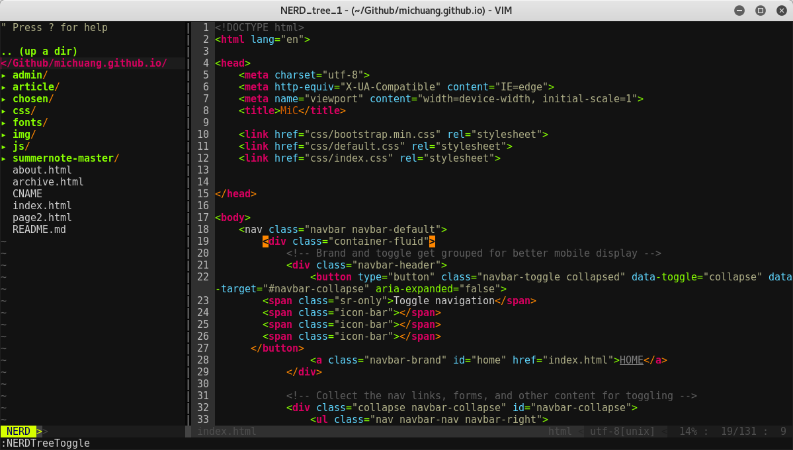

注：这里讲的都是最最基本的东西，如果你想看高阶的东西。我也不会.....
昨天打开了被我遗忘在角落好久的Linux的机子，发现自从装完系统以后基本就没怎么碰过，以至于机子里除了自带的一些软件以外其他的什么都没有。然后抱着反正也不想干活那就来随便瞎折腾折腾吧的心理打开了Vim。
先上一下效果图吧

Vim 的使用
自己看 vimtutor 去
讲真，我觉得 vimtutor 真的是最棒的 vim 教材，没有之一。终端直接输入 vimtutor 就能进入，跟着教材过几遍基本也就会了。我满打满算也就跟着 vimtutor 敲了半个小时吧差不多。
真不想看？
好吧，要是你只是想试试最最基本的操作而且一看文档就头大，那我就总结一下最最基本的使用方法好了。
Vim 有三种模式：
- 不能打字模式
- 打字模式
- 底层模式
刚进入 Vim 的时候自动处于 “不能打字模式”，这个时候可以控制光标做除了打字以外的一系列神奇的事情：
j, k, h, l |
上下左右 |
Ctrl + u |
上翻半页 |
Ctrl + d |
下翻半页 |
0 |
跳至行首 |
$ |
跳至行尾 |
w |
下一个词 |
b |
上一个词 |
i |
光标前插入（进入打字模式） |
a |
光标后插入（进入打字模式） |
A |
行尾插入（进入打字模式） |
o |
下面加一行（进入打字模式） |
O |
上面加一行（进入打字模式） |
进入“打字模式”以后就可以愉快的打字了，没啥好说的这个。可以按ESC退回到不能打字模式
当你写完一篇文章以后你觉得很满意，想退出 Vim 去干一些快乐的事情，你就要用到“底层模式”，首先保证你在“不能打字模式”然后按冒号:就进入了底层模式。你就可以：
w |
保存 |
q |
退出 |
q! |
我不管反正我要退出 |
wq |
保存后退出 |
wq! |
我不管反正我要保存后退出 |
以上操作应该够用一阵子了，其实讲真我觉得会hjkl，会i插入，会ESC，然后会:wq!，就能用了。以后哪天有时间了把 vimtutor 撸几遍妥妥的。
Vim 配置 + 插件
配置
不过真正让 Vim 变得牛逼的还是它的插件，以及个性化的配置。一般来说 Vim 的默认配置文件在/etc/vim/vimrc，但是我们可以在 home 目录底下新建一个自己的 .vimrc 文件来自定义配置。喜欢看文档的同学可以看看非常详细的 Vim 文档
研究研究。不喜欢看的咱就先设置一些简单的配置比如说：
syntax on "语法高亮基本的功能差不多了我觉得。
set nu "显示行号
mouse=a "允许使用鼠标
showmatch "匹配括号
tabstop=4 "tab键为四格
colorscheme molokai "设置配色方案
插件
插件建议用 Vundle 统一管理，安装 Vundle 的话需要手动把 Vundle 的源文件下载到 home 目录 下的 .vim/bundle/Vundle.vim 文件夹里或者直接在终端输:
$ git clone https://github.com/VundleVim/Vundle.vim.git ~/.vim/bundle/Vundle.vim然后在
.vimrc 文件的开头加上
set nocompatible
filetype off
set rtp+=~/.vim/bundle/Vundle.vim
call vundle#begin()
Plugin 'VundleVim/Vundle.vim'
call vundle#end()
完成上述步骤后进入 Vim，在“底下冒号模式”里输入 PluginInstall, Done! 大功告成！之后想要安装其他的插件只需要在 .vimrc 文件里 call vundle#begin() 之后加上 Plugin '你喜欢的/插件'，然后进入 Vim，在“底下冒号模式”下输入 PluginInstall Vundle
就会自动替你下载安装插件了。
列上几个你可能用的上的插件：
| 'scrooloose/nerdtree' | 树形文件目录插件 |
| 'kien/ctrlp.vim' | 快速搜索文件 |
| 'Valloric/YouCompleteMe' | 大名鼎鼎的YCM自动补全 |
| 'SirVer/ultisnips' | 自动补全增强，可以和YCM搭配使用 |
最后
今天开始下雪了，真特么冷...